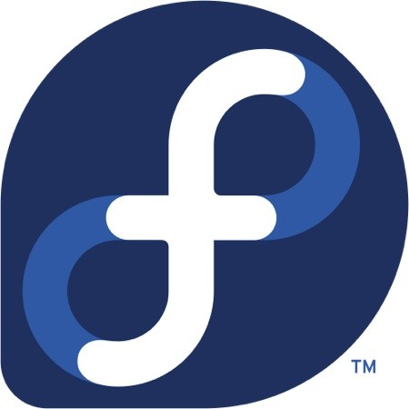

Download
In this section you will find all the versions of Qucs which have been released so far.Source code
|
|
Build instructions
For instructions on how to compile Qucs from the released source tarball and from the Git repository clone, please refer to the Build Instructions.Repository Snapshot
A copy of the current source code (qucs, qucs-doc and qucs-core included) in the repository. Available for download here.Official Qucs packages
The following packages are currently maintained by the Qucs team.| Logo | Link | Maintainer | Comment |
|---|---|---|---|
| Qucs at Ubuntu PPA | Qucs Team | Ubundu Utopic, Trusty, Raring, Quantal, and Precise. PPA repository: ppa:qucs/qucs | |
| Qucs Mac OSX installer Qucs at Homebrew | Qucs Team | MacOSX 10.7+ package installer, Qt4.8.6, ASCO | |
| Qucs installer for Win32 | Qucs Team | Windows (32bit) installer, built with Mingw-w64-i686 v4.8.2, Qt4.8.6, includes ADMS 2.3.4, Freehdl 0.0.8, iverilog 0.9.6 (20130827) and Mingw-w64 |
Unofficial Qucs packages
The following pages are not direclty maintainted by the Qucs team.Some are abandoned and listed in the hope someone takes over the maintanence.
If you are a maintainer and updated your package, we apreciate if you let us know.
| Logo | Link | Maintainer | Comment |
|---|---|---|---|
| MacPorts Qucs at MacPorts | -- | Qucs 0.0.17 is available with MacPorts | |
| Qucs at Arch Linux | Sergej Pupykin | Qucs 0.0.18 is available | |
|  | Qucs at Fedora | Jcapik | Qucs 0.0.17 is available |
| Qucs at OpenSuSE | openSuse Build Service | Qucs 0.0.17 available for OpenSuSE 13.1, 12.3 | |
| Qucs at Gentoo | Marcus D. Hanwell <cryos@gentoo.org> | 0.0.17 snapshot (?) | |
| Qucs on Puppy Linux | Mike Masterson <galoof@optonline.net> | Qucs 0.0.18 (140629 snapshot). | |
| Qucs at Debian | Jose L. Redrejo Rodriguez <jredrejo@edu.juntaextremadura.net> | Qucs 0.0.15 (abandoned?) also FreeHDL and Icarus Verilog available | |
| Qucs at FreeBSD | Dag-Erling Smorgrav <des@FreeBSD.org> | Qucs 0.0.16 | |
| Qucs at NetBSD | Vincent Habchi <10.50@free.fr> | Qucs 0.0.13 (abandoned?) | |
| Qucs on IRIX | Frederick Isaac <freddyisaac@yahoo.com> | part of the nekochan project, native build of freely available packages |
About the Win32 binary releases
As already mentioned there is an installer package for
Qucs for Win32 systems. The relocations of the package
(the location where the package gets installed) is mainly
steered by environment variables. During a normal installation
the appropriate environment variables are automatically set for
the user who installed the package.
One of them must be emphasised: HOME. During
installation an appropriate file system location will be found.
When it was already set then the previous value is assumed. The
location decides where the project, intermediate and
configuration files will be saved. So when the user wonders
about missing project files or lost configuration it's worth to
have a look at the environment variables.
If FreeHDL is meant to be used for digital simulation
then also the binary package must be downloaded and installed.
It requires the MinGW32 compiler. If it is not already
installed, it's possible to install a prepared binary package
for this, too. It contains the minimal MinGW32
installation required to work with FreeHDL.